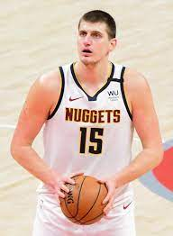

Nikola Jokic (Sombor, 19. februar 1995) srpski je košarkaš. Igra na poziciji centra, a trenutno nastupa za Denver nagetse.
Prvi je Srbin koji je proglašen za najkorisnijeg igraca NBA lige. Nagradu za najboljeg košarkaša najjace lige na svetu je dobio u sezoni 2020/21.
Tri sezone je nastupao za Mega Leks i proglašen je za najkorisnijeg igraca Jadranske lige.

Izabran je u drugom krugu NBA drafta 2014. kao 41. pik od strane Denver nagetsa sa kojima je u julu 2015. potpisao ugovor.
Košarkaški savez Srbije dodelio je Jokicu nagradu za najboljeg srpskog košarkaša u 2018. godini.
Godine 2019. izabran je prvi put da igra na Ol-star utakmici. Kao lider franšize, izborio je doigravanje u sezoni 2018/19 i posle deset godina Denver je prošao prvu rundu doigravanja.
| Poeni | 12 | 16 | 21 | 14 |
|---|---|---|---|---|
| Skokovi | 7 | 12 | 12 | 15 |
| Asistencije | 14 | 18 | 10 | 16 |